Urban traffic, the modern waiting room
We started with the numbers: India has the world's second-largest road network and some of its most congested cities, with static signal timing that ignores what is actually on the road.
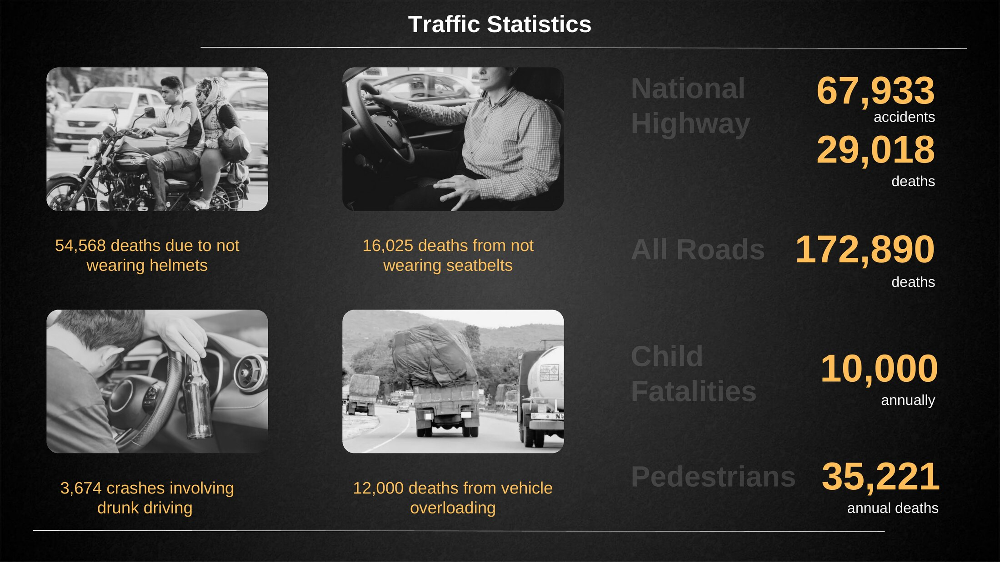
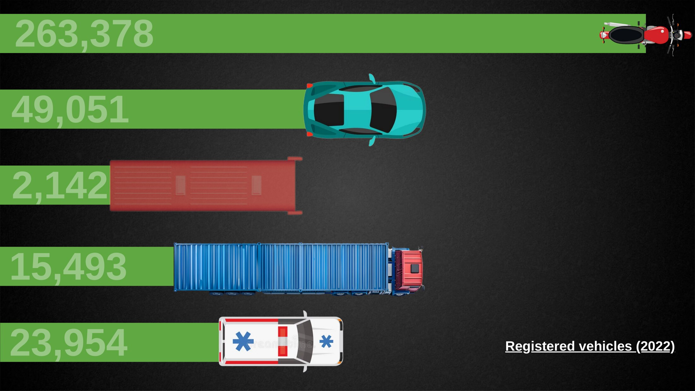
Research
Stakeholder mapping, on-the-ground interviews with traffic authorities and daily commuters, and affinity mapping narrowed the field to four problems, from congested junctions to inconsistent penalties.
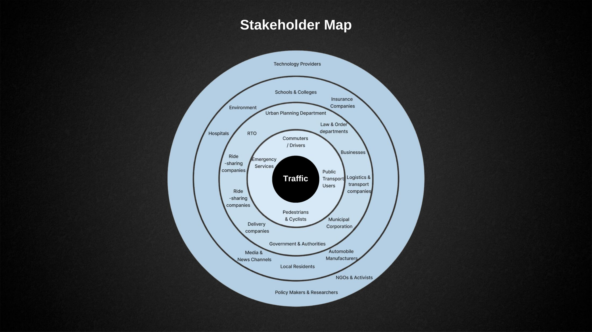
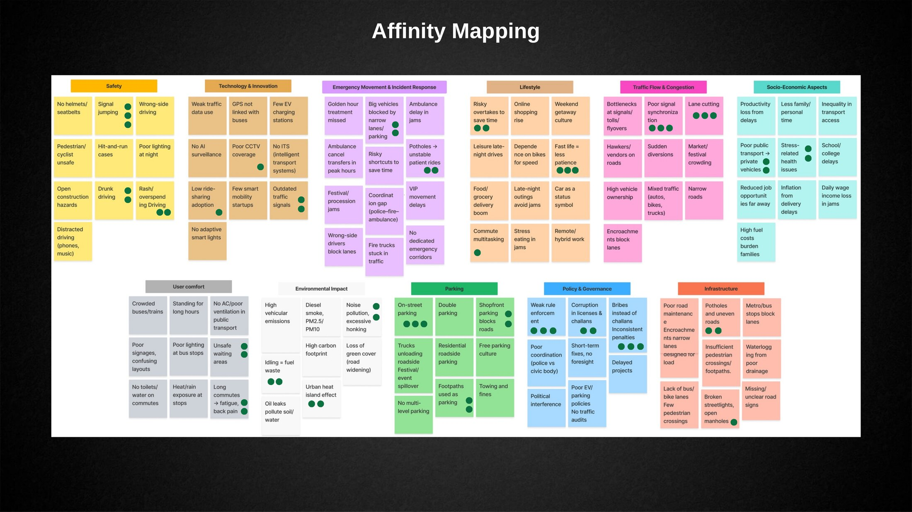
The attachment
Our core product is an attachment for existing signal poles. A thermal camera counts vehicles by their engine and exhaust heat rather than relying on visible light, so it works at night and in rain. Its count drives an I/O relay that lengthens or shortens the green phase in real time, and emergency vehicles can trigger an override.
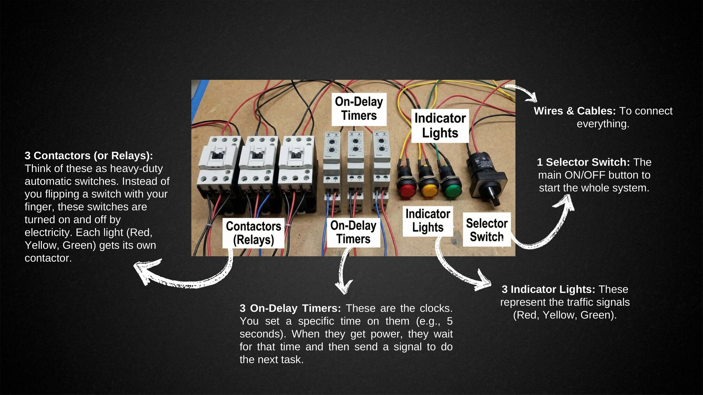
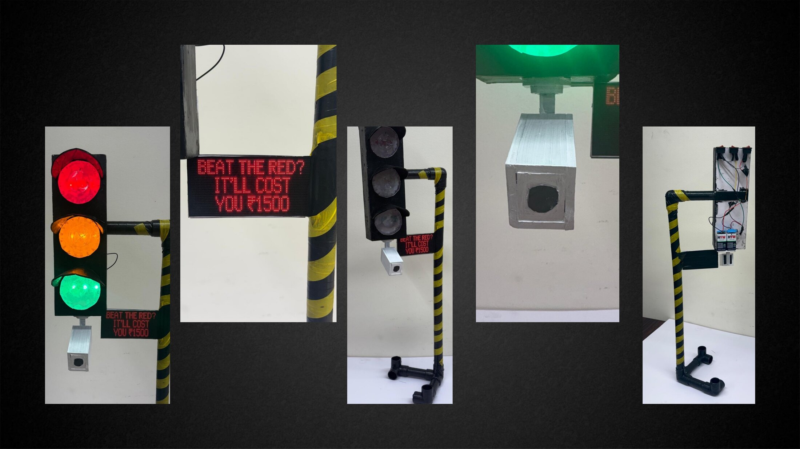
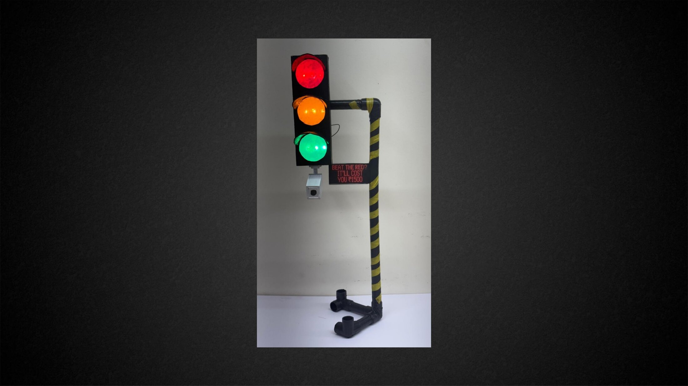
The wider system
Signals link to a central cloud, ANPR cameras automate challans, and lane-assistance boards and fine reminders target driver behaviour.
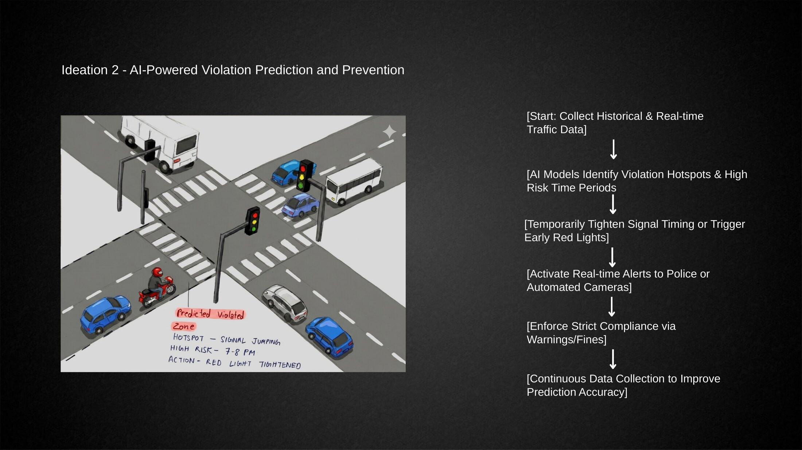
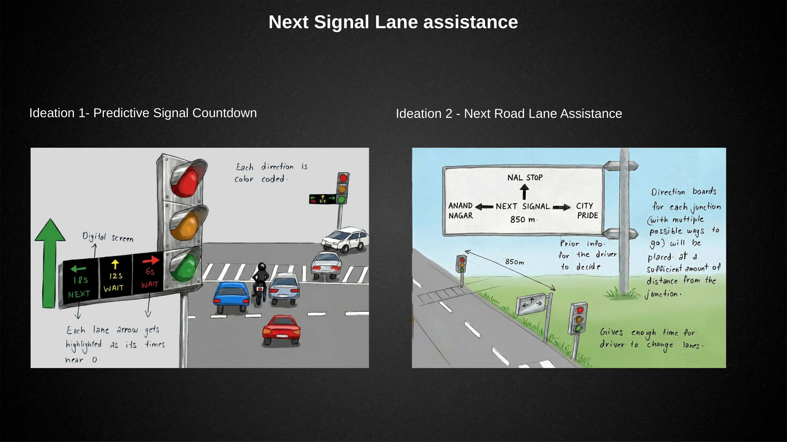
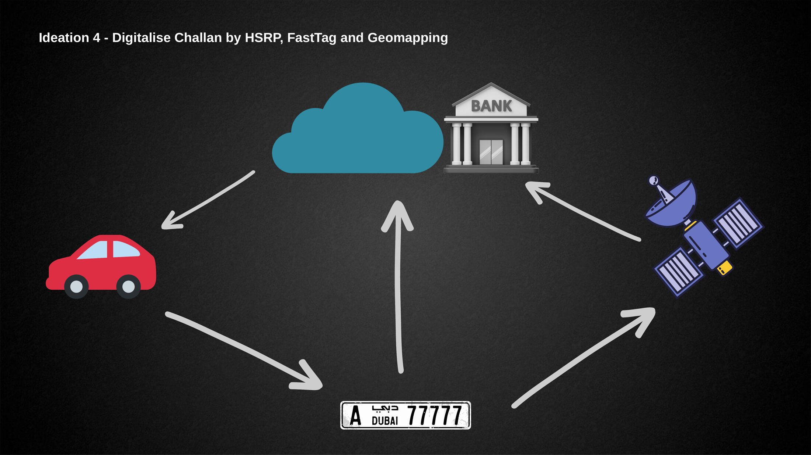
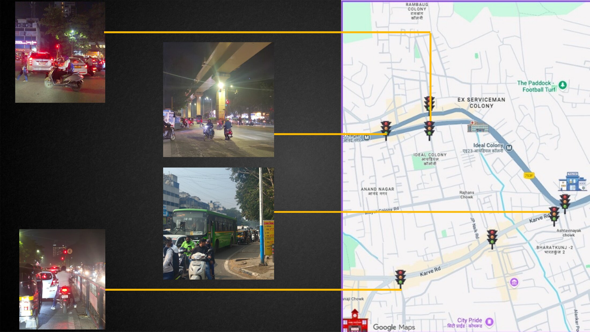
Prototypes
We built a working signal mock-up with timers and relays, a city-scale model of a junction, and redesigned the mParivahan app so penalties and licences are transparent.
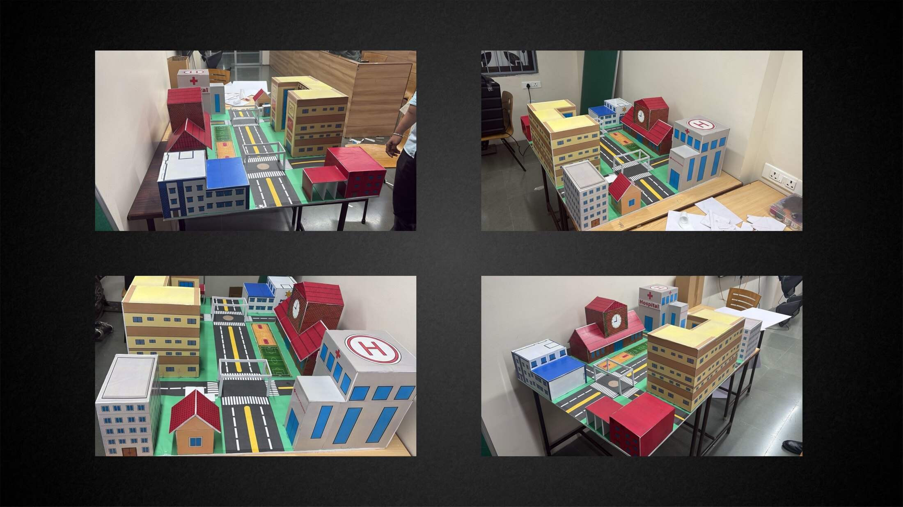
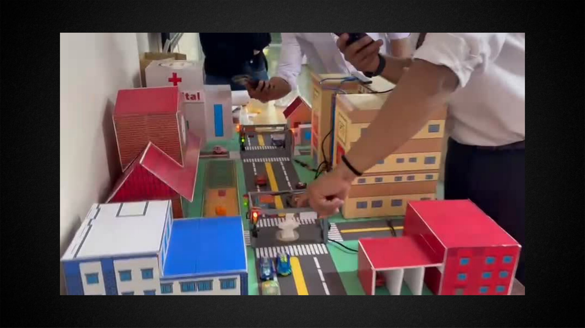
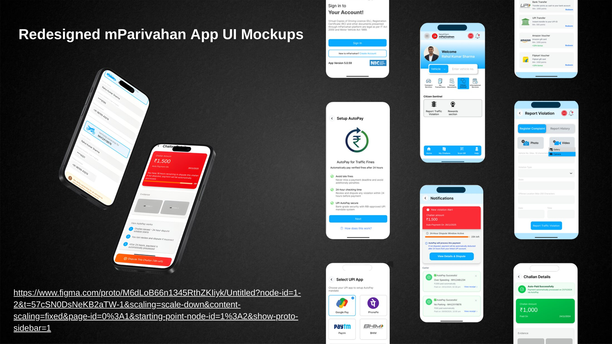
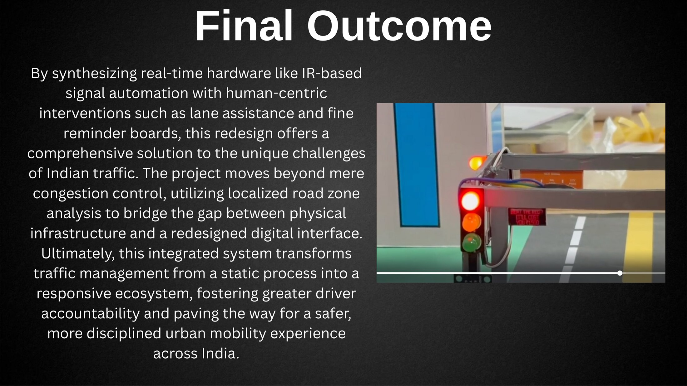